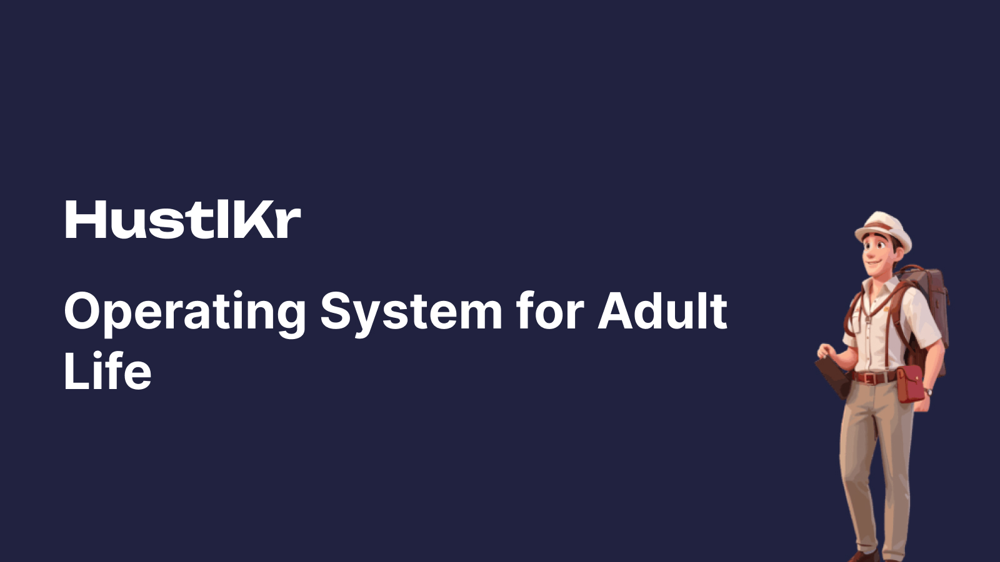
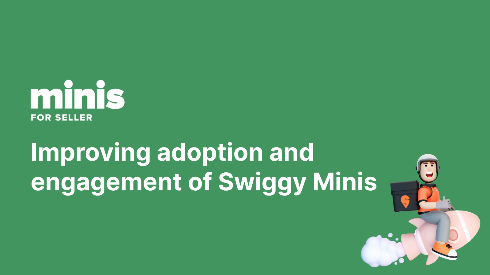
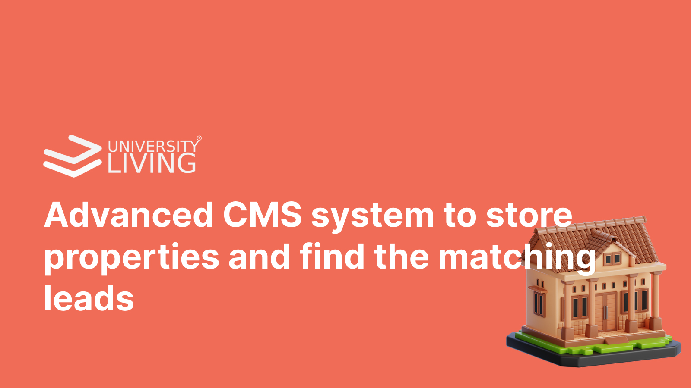
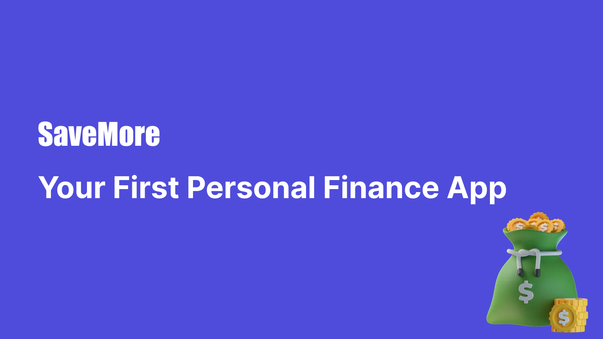
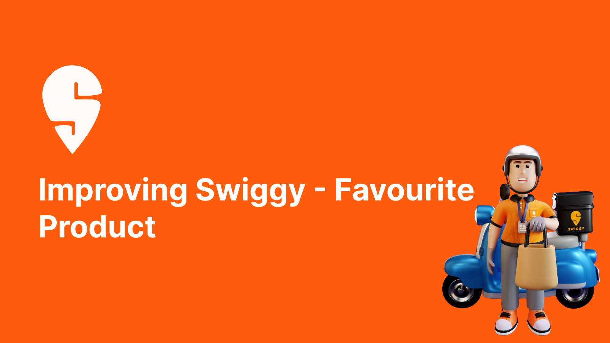
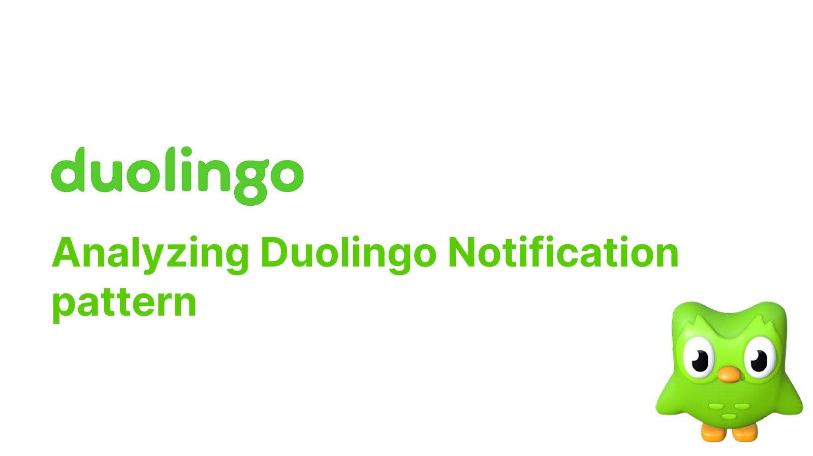
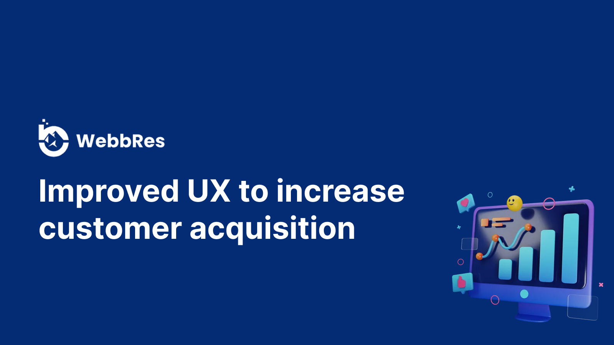
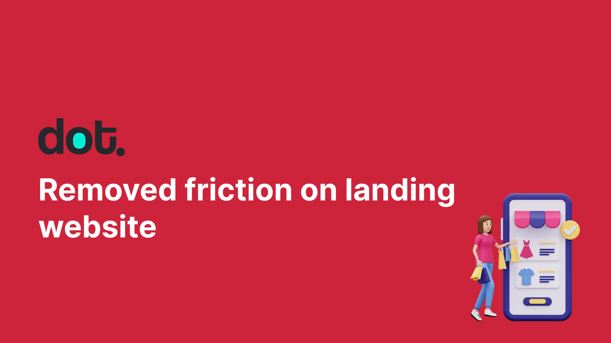
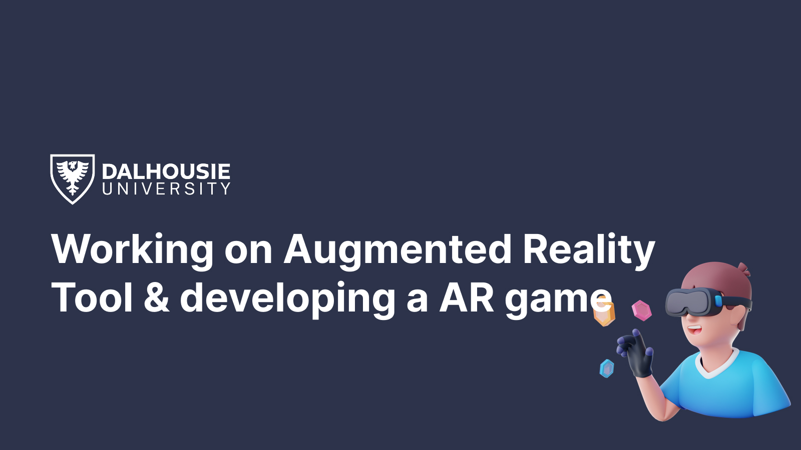
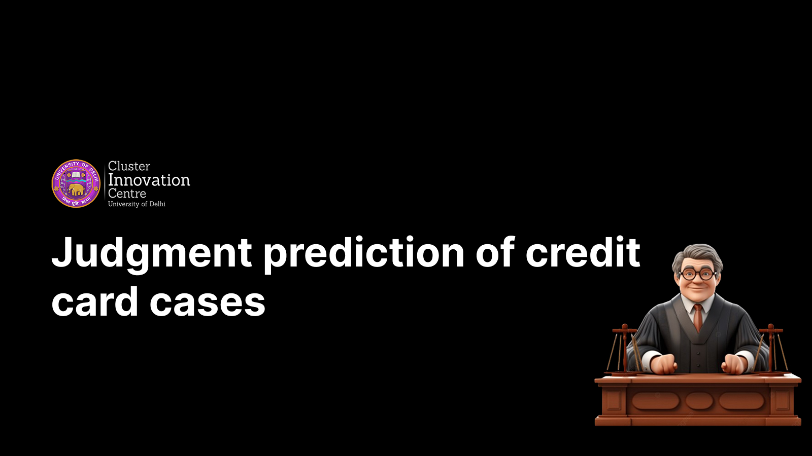

Building with AI
I don't just write PRDs for AI features - I prototype and ship them myself, from PM Forces to Hustlkr and a growing playground of AI-powered side projects.
I'm a product manager who loves getting hands-on with design, code, and AI. Over the last 2 years I've worked with 10+ startups across 5+ industries - shaping MVPs across internal tools, SaaS, CMS, and enterprise platforms. Lately that curiosity has turned into building and shipping small AI-powered projects of my own - a few of those are in the work below.
Featured projects

Hustlkr · Self-initiated build Hustlkr - an operating system for adult life. Next.js App Router front end with Supabase Postgres and auth, the Claude API doing the reasoning, Razorpay for checkout and Recharts for the dashboards. Problem: Young professionals juggle finances, careers, health, and personal goals across disconnected apps, making it difficult to stay organized and make long-term progress.
Swiggy Mini · Product School challenge A strategy to lift adoption of Swiggy Minis. Defined a product strategy to improve adoption and engagement of Swiggy Minis using user data and persona planning. Performed a product teardown to understand why Swiggy Minis had limited adoption. Identified onboarding, discoverability, and merchant visibility issues, then proposed product improvements to increase creator participation and customer engagement. Case Study
University Living · Student housing Grew lead flow and built an internal CMS for the fulfilment team. Created acquisition hooks across the mobile app and website that reached 50,000+ users and lifted lead flow by 3%, then built a CMS that cut the fulfilment team’s property-lead sourcing time by 20%. Problem: Managing thousands of student properties and manually matching them to prospective students slowed operations and reduced efficiency.
SaveMore · Nextleap graduation project Built the MVP for a personal finance app. An MVP that simplifies a user's very first budgeting experience. Problem: First-time earners often find personal finance intimidating and don't know where to start.
Swiggy · Food tech Found ways Swiggy could acquire more users. Explored why Swiggy is a favourite product and where it could win more users by solving more use cases. A product redesign of one of my favorite consumer apps. Studied Swiggy's end-to-end ordering experience, identified opportunities across discovery, ordering, and post-purchase interactions, and proposed product enhancements backed by user research and UX principles. Product Teardown
Duolingo · Nextleap teardown Analysed Duolingo's notification system. Studied Duolingo's notification patterns and proposed features to improve the system. Analyzed Duolingo's notification strategy to understand how timing, messaging, streak psychology, and behavioral triggers improve user retention. Documented insights and proposed enhancements to optimize engagement without overwhelming users. Product Teardown Slack · Nextleap learn-in-public Reverse-engineered Slack's onboarding. Took apart Slack's onboarding flow to find where it could improve. Evaluated Slack's onboarding journey to identify friction for new users. Redesigned key onboarding flows, improving workspace understanding, feature discovery, and activation through progressive guidance and contextual education. Product Design
Webbres · B2B SaaS Fixed v1's UX problems and designed v2. Solved UX issues in v1 with stakeholders, designed v2, and built marketing materials like email and ad creatives. Problem: The existing website created friction during the customer acquisition journey, resulting in lower conversions.
Dot My Style · Fashion tech Removed friction on the landing site and designed the MVP. Improved the onboarding quiz with gamification, lifting user engagement to 90% and return visits by 67%. Problem: Users dropped off before exploring the platform due to a confusing landing experience.
Dalhousie University · GEM Lab (HCI) Revived an AR storytelling tool for HCI research. Revamped the StoryCreatAR tool, deployed and tested 2 stories on Oculus, and built a narrative game for Microsoft HoloLens presented to 15-20 people. Worked as part of a research initiative to design and develop an augmented reality learning experience and an AR game. Contributed to interaction design, prototype development, and immersive educational experiences using Unity and AR technologies. Research
Court Cases · Cluster Innovation Center Judgment prediction for credit-card court cases. Built a case dataset with a professor and trained multiple ML models to predict judgments, reaching 80% accuracy. Developed a machine learning solution that predicts judgments for credit card dispute cases using historical legal data. Explored data preprocessing, feature engineering, model training, and evaluation to demonstrate how AI can assist legal decision support.I don't just write PRDs for AI features - I prototype and ship them myself, from PM Forces to Hustlkr and a growing playground of AI-powered side projects.
From roadmap to shipped feature - I prioritize against business goals, write specs engineers can build from, and run the process end to end with tools like Mixpanel and Google Analytics.
Developing product design strategies according to business requirements, collaborating with stakeholders, and creating data-driven products and features.
Associate Product Manager with 2+ years of experience building and scaling AI-powered consumer products across Healthcare, eCommerce, and B2C marketplaces. Experienced in end to end product development, growth experimentation, funnel optimization, user acquisition, conversion optimization, product strategy, and data-driven decision making using analytics. Experienced partnering with Engineering, Design, Data Science, and Business teams to deliver customer-facing products.
University of Delhi
Specialization: Information Technology & Mathematical Innovation
CGPA: 9.08
Associate Product Manager at FOXO
Led end-to-end development of AI-powered healthcare products, including personalized health playbooks, Meal V3, and PRIMER, owning product strategy, roadmap, prioritization, experimentation, and launches. Partnered closely with Engineering, Design, AI, Data Science, and Clinical teams to deliver user-centric solutions, reducing care plan generation from 8 to 10 hours to under 1 hour, enabling real-time nutrition feedback, and launching PRIMER, which acquired 100+ customers and generated ₹10L in its first month.
Associate Product Manager at Droom (previously Product Analyst)
Launched a self-serve Rental category that drove 18,000+ listings and 100+ sellers in the first month, shipped a Driver App that lifted per-ride revenue 7-8%, and built an AI-driven seller-screening system that cut manual onboarding effort by 80% across Droom's marketplace.
Product Intern at University Living
Grew acquisition hooks across mobile and web that lifted lead flow 3% to 50,000+ users, and built an internal CMS that cut the fulfillment team's lead-sourcing time by 20%.
Visiting Researcher at Dalhousie University (GEM Lab)
Researched space syntax and narrative experience under Professor Derek Reilly, revived the StoryCreatAR tool for Oculus, and built an AR storytelling game deployed on Microsoft HoloLens for a 15-20 person audience.